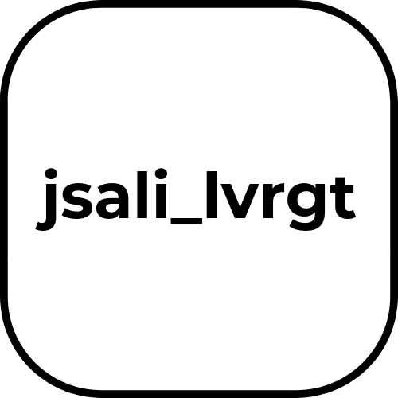
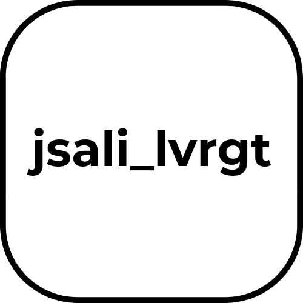

Infrastructures & Développement rural
- Désenclavement via routes, rails, énergies.
- Opportunités économiques locales.
- Intégration paysagère & sociale.
Technologies & Innovations
- Usage des SIG, drones, modèles numériques.
- Surveillance géomatique et intelligente.
- Techniques durables innovantes.
Gouvernance & Participation
- Acteurs locaux dans les projets.
- Modèles adaptés aux territoires ruraux.
- PPP & politiques publiques durables.
Écologie & Biodiversité
- Réduction des impacts naturels.
- Corridors écologiques & restauration.
- Transition énergétique des infrastructures.
Résilience climatique
- Inondations, sécheresse, érosion.
- Gestion durable des ressources.